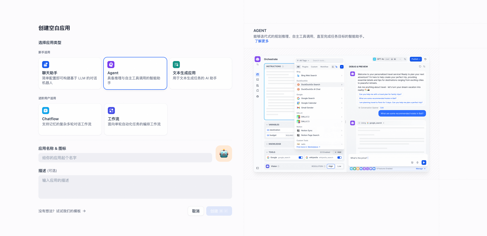
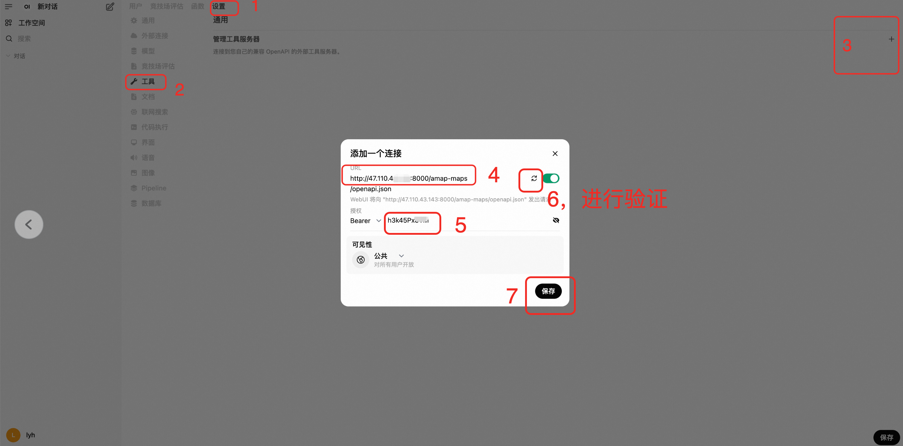

MCP Server服务实例部署文档
概述
MCP（Model Context Protocol，模型上下文协议） ，2024年11月底，由 Anthropic 推出的一种开放标准，旨在统一大型语言模型（LLM）与外部数据源和工具之间的通信协议。MCP 的主要目的在于解决当前 AI 模型因数据孤岛限制而无法充分发挥潜力的难题，MCP 使得 AI 应用能够安全地访问和操作本地及远程数据，为 AI 应用提供了连接万物的接口。 本服务创造性地解决了传统MCP市场的以下问题： 1. 每次只能选择单个MCP工具进行部署。--本服务支持多选MCP工具同时部署 2. 不能同时兼容OpenAPI和SSE的方式调用工具，这导致只能适配部分平台。--本服务支持两种方式调用，支持Dify，Cherry Studio，OpenWebUI等AI助手。 3. 无法灵活增减要使用的MCP工具。--本服务支持通过变配动态增删要使用的MCP工具。
本文向您介绍如何开通计算巢上的MCP Server社区版服务，以及部署流程和使用说明。
前提条件
部署Dify社区版服务实例，需要对部分阿里云资源进行访问和创建操作。因此您的账号需要包含如下资源的权限。 说明：当您的账号是RAM账号时，才需要添加此权限。
| 权限策略名称 | 备注 |
|---|---|
| AliyunECSFullAccess | 管理云服务器服务（ECS）的权限 |
| AliyunVPCFullAccess | 管理专有网络（VPC）的权限 |
| AliyunROSFullAccess | 管理资源编排服务（ROS）的权限 |
| AliyunComputeNestUserFullAccess | 管理计算巢服务（ComputeNest）的用户侧权限 |
MCP Server社区版在计算巢上的费用主要涉及：
- 所选vCPU与内存规格
- 系统盘类型及容量
- 公网带宽
为了提高MCP工具调用的性能，我们推荐至少选择2核，4G以上的CPU。 且默认帮您配置的网络带宽为10Mbps,按流量计费。
计费方式包括：
- 按量付费（小时）
- 包年包月
预估费用在创建实例时可实时看到。 如需更多规格、其他服务（如集群高可用性要求、企业级支持服务等），请联系我们 mailto:xx@xx.com。
部署架构

部署流程
部署参数说明
| 参数组 | 参数项 | 说明 |
|---|---|---|
| MCP配置 | McpConfigJson | 需要使用的MCP工具 |
| MCP_KEY | MCP Server和大模型交互的秘钥 | |
| 服务实例 | 服务实例名称 | 长度不超过64个字符，必须以英文字母开头，可包含数字、英文字母、短划线（-）和下划线（_） |
| 地域 | 服务实例部署的地域 | |
| 付费类型 | 资源的计费类型：按量付费和包年包月 | |
| ECS实例配置 | 实例类型 | 可用区下可以使用的实例规格 |
| 实例密码 | 长度8-30，必须包含三项（大写字母、小写字母、数字、 ()`~!@#$%^&*-+= | |
| 网络配置 | 可用区 | ECS实例所在可用区 |
| VPC ID | 资源所在VPC | |
| 交换机ID | 资源所在交换机 |
部署步骤
- 单击部署链接，进入服务实例部署界面，选择想部署的地域，根据界面提示，填写参数完成部署。
- 选择你想使用的MCP工具。注意，可以多选哦！

- 如果需要使用自定义的MCP工具请参考【使用自定义MCP工具】
- 这里的MCP有两种类型。一种是无需环境变量的，比如"时间服务"，则直接勾选上，跳过参数配置步骤。
- 另一种MCP类型需要环境变量，比如高德地图，则需要配置上环境变量，否则MCP Server会部署失败

- 如果不清楚MCP工具怎么使用，可以点击查看"帮助文档"查看和学习。

- 系统默认帮你生成了一个API KEY，用于保护你即将部署的MCP工具，你可以修改此参数。
- 选择适合你的套餐，生产环境建议选择2核4G的规格以上，每次部署3个以下的MCP工具可直接选择热卖套餐。配置ECS登录密码
- 如果想选择其他实例类型或公网带宽，可选择自定义套餐进行配置
- 对可用区和网络进行配置。推荐选择任意可用区后，直接新建网络和虚拟机

- 点击立即创建，等待部署成功，该过程一般耗时3分钟。该时长根据您选择的工具的多少有所波动。

- 访问刚部署成功的实例界面，可查看到您部署的专属MCP工具的地址和API秘钥。针对不同的AI助手请参考下文进行配置和使用
使用自定义的MCP工具
- 点击新增自定义MCP工具，注意：自定义MCP工具可以重复添加
- 填写自定义工具的名称和id，注意id不能重复。
- 选择你要使用的MCP工具的启动方式，如果选择如npx或uvx，则需要填写启动命令，该启动命令需要是数组的形式。比如
['mcp-server-time', '--local-timezone=America/New_York']
- 如果该命令启动的时候需要依赖一些环境变量，则需要在下方填写：比如key:GITHUB_PERSONAL_ACCESS_TOKEN, value: xxx
- 如果选择SSE的启动方式，需要填写URL。注意：如果需要鉴权，则该鉴权的key需要包含在此URL中。 如"https://mcp-xxx-22b0-4037.api-inference.modelscope.cn/sse"
- 点击选中当前自定义工具。 注意： 您新增的自定义工具在变配时会重新渲染，可以自行增加或减少要使用的MCP工具。当配置完自定义的MCP工具时，可继续进行部署步骤"6"
修改要使用的MCP工具
如果想要修改要使用的MCP工具请参考下列操作
1. 在计算巢控制台，点击"我的实例"，选择之前部署的MCP Server实例，点击右上方的"修改配置"。 2. 点击修改MCP工具，并点击"下一步"
2. 点击修改MCP工具，并点击"下一步" 3. 选择想要新增的MCP工具，比如我这新增了Fetch工具。（注意：之前选择的工具在此处会被重新渲染）
4. 当然这里如果涉及到环境变量，则一定要按照文档进行设置。
5. 点击确定，发起工具修改请求。
6. 等待实例状态变更完。
3. 选择想要新增的MCP工具，比如我这新增了Fetch工具。（注意：之前选择的工具在此处会被重新渲染）
4. 当然这里如果涉及到环境变量，则一定要按照文档进行设置。
5. 点击确定，发起工具修改请求。
6. 等待实例状态变更完。 7. 将输出中新增的MCP工具加入到AI对话客户端中。
7. 将输出中新增的MCP工具加入到AI对话客户端中。
Cherry Studio使用示例
- 来到计算巢实例界面，
 ,接下来的操作需要使用"MCP Server访问地址"部分
,接下来的操作需要使用"MCP Server访问地址"部分 - 打开您的Cherry Studio助手，按照下图示例，新建MCP服务器。

- "名称"和描述可以随便填。
- 类型选择"服务器发送时间（sse)
- URL填写实例界面的此处链接 注意此处使用的是http协议，结尾是sse后缀
- 在请求头添加上鉴权参数：
 。注意此处需要将":"改为"="填入，比如Authorization=Bearer 123
。注意此处需要将":"改为"="填入，比如Authorization=Bearer 123 - 点击右上角的启用按钮和保存按钮。
- 来到对话界面，选择要使用的MCP工具。
- 选择合适的模型，与AI对话，比如"我现在在杭州云谷，请给我推荐开车半小时以内的餐馆",即可让AI调用模型帮你找到合适的餐馆。
Dify 使用示例
- 来到计算巢实例界面，,接下来的操作需要使用"MCP Server访问地址"部分
- 打开您的Dify，按照下图示例，安装"SSE发现和调用MCP工具"

- 如果后续使用出现问题，可将此工具版本降低到0.0.10。
- 点击"授权"按钮对SSE工具进行配置。此处可直接粘贴步骤一中的MCP Server访问地址

- 创建个Agent，并进入。
- 按照下图示例，开启MCP工具调用，填写合适的提示词，选择合适的模型，比如QWEN-max。

- 对话，即可调用MCP工具。

百炼使用示例
- 来到计算巢实例界面，,接下来的操作需要使用"百炼Mcp Server地址"部分
- 打开您的百炼控制台，进入到MCP界面
- 选择SSE的安装方式，填写合适的服务名称和描述
- 选择要使用的MCP工具，将其配置粘贴到"MCP服务配置"中，示例如下。
{"mcpServers":{"amap-maps":{"type":"sse","url":"http://47.xxx:8080/amap-maps/sse","headers":{"Authorization":"Bearer rBrrSh7ZhA"}}}}
- 注意，此处如果在计算巢选择安装了多个工具，需要在控制台每个工具配置一次MCP服务。
- 在百炼"应用"界面，点击"应用管理"，点击"新增应用"，选择"智能体应用"，并点击创建
- 按照图示顺序添加要使用的MCP工具。
- 选择合适的模型，即可在对话中使用MCP功能。

Open WebUI使用示例
- 访问计算巢实例界面，
- 打开您的Open WebUI客户端，如Open WebUI，并将地址和API秘钥粘贴进去。
- 新建个对话，并开启MCP工具

- 验证一下AI使用您的MCP工具！

问题排查
如果发现实例一直未部署成功，90%的概率是环境变量配置错误，可参考以下步骤排查： 1. 通过会话管理登录到ECS实例。 2. 输入以下指令确认环境变量是否正确。
cat /root/config.json
- 对配置进行修改。重启docker compose应用
sudo systemctl restart quickstart-mcp
企业用户推荐的ECS实例配置
- 推荐的ECS实例类型：请选择cpu核数和内存大于ecs.u1-c1m2.xlarge已上的类型
- 公网带宽：请选择大于8MPS的带宽。（某些MCP工具涉及到联网调用）
- 对于4核8G的U实例类型，单次部署请选择10个以内的MCP工具
请访问MCP官方了解如何使用：使用文档